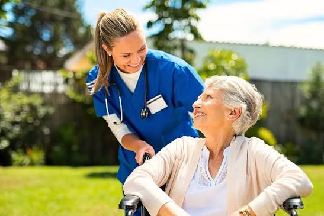
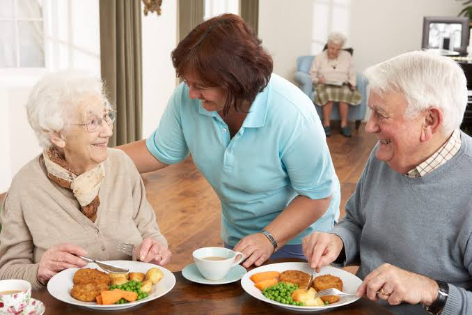
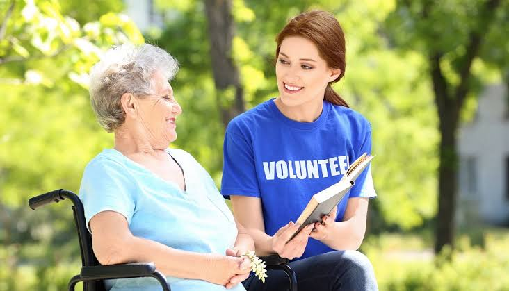

OUR SERVICES
We offer many services at AFTO to make sure that our residents stay as healthy as possible and connected as community

Medical and Nursing Care
We have a team of trained Nursing professionals on the facility ready to assist on a moments notice, They assist residents with daily medical neeeds like routine health checks, medication treatment. This helps make sure our elderly are in the best shapes they can be.

Meals and Nutrition
Our on site workers as well as volunteerswork together to make sure they prepare the best foods for our residents. Some residents even built cooking communities to cook their healthy food to keep their strenght up.

Volunteerswork
Family members are welcome to visit and stay involved in their loved one's life at AFTO. We also work closely with a dedicated group of volunteers who assist with day-to-day activities and companionship for our residents.
Social and Physical activities
At AFTO we believe elderly people deserve an active lifestyle as much as young people so we offer a range of social activities such as movie/show communities where our residents can discuss about thier favourate films. We also offer sporting activities such as tennis, pilates and exercise classes. This makes sure our elderly have a community they can be apart of